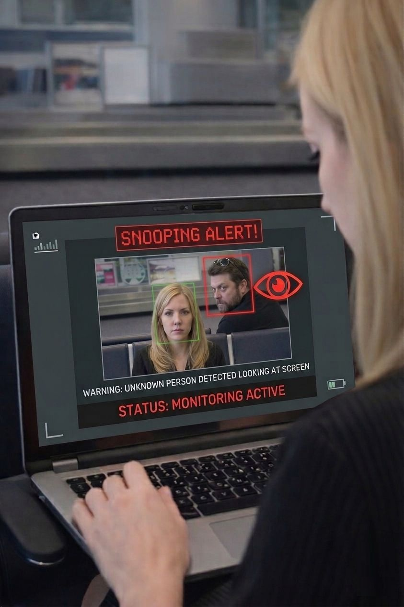

1. Detect unfamiliar faces
Screen Guardian identifies unfamiliar people around your laptop and reacts when someone unauthorized is near your screen.
Stop shoulder surfing, prevent screen snooping, and protect your digital privacy in cafes, airports, offices, conferences, coworking spaces, and anywhere you work on your laptop.
Screen Guardian is an AI-powered laptop privacy and security application for Windows that detects unauthorized screen viewing, unfamiliar faces, and shoulder surfing attempts in real time. Everything runs locally on your device for fast, fully private protection with no cloud dependency.
Free 3-day trial included. Already installed? Unlock the full version.

Shoulder surfing happens when someone looks at your screen without permission to view sensitive information. It is a real privacy threat in public spaces, shared offices, and remote work environments where your laptop screen can be exposed to strangers, coworkers, or passersby.
Screen Guardian combines AI-based awareness, instant alerts, and local processing to help protect your screen privacy whether you step away from your device or someone tries to look over your shoulder while you work.
Screen Guardian identifies unfamiliar people around your laptop and reacts when someone unauthorized is near your screen.
The app can recognize when someone appears to be looking toward your display in real time and surfaces an immediate warning.
Get fast notifications and on-screen awareness so you can respond quickly when your laptop privacy may be at risk.

Screen Guardian does more than protect your laptop when you walk away. It can also recognize when someone is trying to glance at your screen in real time and immediately alert you, helping you reduce privacy risks in public and shared environments.
Whether you are grabbing coffee, boarding a flight, stepping into a meeting, or working in a shared office, Screen Guardian keeps watch so you do not have to.
Detect unfamiliar faces instantly when you are away from your laptop or when someone unauthorized appears near your screen.
Get immediate notifications if someone tries to access or view your screen without permission.
Everything runs on your device. No cloud uploads. No remote surveillance. No unnecessary data exposure.
Review security-related events securely with encrypted storage and automatic deletion after 7 days.
Designed to protect your privacy without slowing down your Windows system.
No internet connection required. Screen Guardian continues protecting your laptop privacy wherever you work.
Receive a warning when someone tries to peek at your laptop over your shoulder in public or shared spaces.
Perfect for remote workers, business travelers, consultants, founders, students, and anyone handling sensitive information on a laptop.
Screen Guardian is built for real-world laptop privacy protection in places where shoulder surfing and accidental screen exposure are most likely to happen.
Protect client work, personal information, messages, and financial documents when working in busy environments with people moving around you.
Reduce privacy risk while traveling, checking email, reviewing documents, or working with confidential material on the go.
Keep sensitive screens more secure in environments where nearby desks, shared rooms, and walk-by traffic make screen exposure easier.
Add an extra layer of privacy protection for flexible work routines where screen visibility and interruptions can change throughout the day.
Physical privacy filters help reduce side-angle visibility, but they do not actively recognize unauthorized viewing. Screen Guardian adds software-based awareness and real-time detection.
Unlike cloud-based monitoring tools, Screen Guardian processes everything locally on your device. Face data, logs, and images never leave your computer. Your privacy protection stays private with encrypted storage, secure local handling, and zero cloud dependency.
Your face data, images, and events remain on your device instead of being uploaded to external servers.
Your laptop privacy does not depend on Wi-Fi or cloud services, making Screen Guardian reliable in travel and low-connectivity environments.
Encrypted activity logs and device-based operation help reduce unnecessary exposure while keeping important alerts accessible to you.
These answers help explain how Screen Guardian supports digital privacy, unauthorized screen viewing prevention, and safer laptop use in public spaces.
Shoulder surfing is a privacy risk where someone looks at your screen to steal or view sensitive information without your permission.
You can reduce risk by staying aware of your surroundings, positioning your screen carefully, using privacy tools, and adding software like Screen Guardian that can actively detect suspicious viewing behavior.
Use strong device security, avoid exposing sensitive information in crowded areas, and add laptop privacy protection software that helps detect unauthorized access and screen snooping in real time.
Yes. Screen Guardian runs fully on your device, so your protection never depends on internet connectivity.
No. Screen Guardian processes everything locally on your device. Face data, logs, and images are not transmitted to external servers.
No. It is useful for public workspaces, shared offices, hybrid work, coworking spaces, schools, and any place where your laptop screen could be viewed by others.
It adds active, software-based protection by detecting suspicious viewing behavior and unauthorized access. Depending on your setup, it can be used as a complement or an alternative to a passive privacy screen.
Download Screen Guardian for Windows and add AI-powered shoulder surfing protection, unauthorized screen viewing detection, and private offline laptop security to your workflow.
Free 3-day trial included. Keep the original download flow and full-license checkout live.
By downloading or using Screen Guardian, you agree to the following terms.
Screen Guardian is provided for personal and professional use to enhance privacy and security. You agree to use the application only for lawful purposes and in accordance with applicable laws.
Screen Guardian processes all data locally on your device. No images, face data, or activity logs are transmitted to external servers. You are solely responsible for how you use the software and any data stored on your device.
Screen Guardian is provided "as is" without warranties of any kind, either express or implied. We do not guarantee that the application will always detect unauthorized access or prevent all privacy risks.
To the fullest extent permitted by law, Screen Guardian shall not be liable for any indirect, incidental, or consequential damages, including loss of data, privacy breaches, or system issues arising from the use of the application.
You are granted a non-exclusive, non-transferable license to use Screen Guardian. You may not reverse engineer, redistribute, or resell the software without permission.
We may update or modify these terms at any time. Continued use of the application after changes constitutes acceptance of the new terms.
For any questions regarding these Terms & Conditions, please contact: Screen Guardian Team.